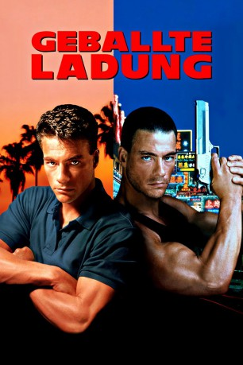
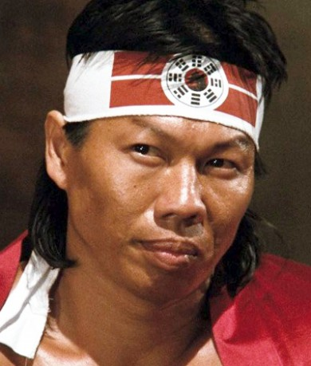

#8066 Geballte Ladung
Alternativ: Double Impact
 
 IMDB-Wertung: 5.5 / 10
IMDB-Wertung: 5.5 / 10  Metascore: 0
Metascore: 0 
Nachdem die Eltern der Zwillinge Chad und Alex brutal ermordet wurden, wachsen die diese – nichts voneinander ahnend – getrennt auf. Fünfundzwanzig Jahre später begegnen sie sich wieder. Sunnyboy Chad arbeitet als Karatetrainer in Kalifornien, Badboy Alex als Schmuggler in Hongkong. So unterschiedlich ihr Leben auch verlaufen ist, eines haben sie gemeinsam: sie sind echte Kampfmaschinen! Bald sind die Brüder den Mördern ihrer Eltern auf der Spur und legen im Familienverbund richtig los.
Jahr: 1991
Dauer: 109 Minuten
FSK: 16
Land: USA Studio: Columbia PicturesTonspuren:
Untertitel: Englisch,
Auflösung: 1080p (1920x1040) Größe: 8284 MB
Genre: Action, Krimi
Regisseur: Sheldon Lettich
Drehbuch: Sheldon Lettich
Soundtrack: Arthur Kempel
Darsteller:
 Jean-Claude Van Damme als Alex / Chad Wagner
Jean-Claude Van Damme als Alex / Chad Wagner Geoffrey Lewis als Frank Avery
Geoffrey Lewis als Frank Avery- Alonna Shaw als Danielle Wilde
- Corinna Everson als Kara
- Alan Scarfe als Nigel Griffith
-  Bolo Yeung als Moon
- Andy Armstrong als Paul Wagner
- Peter Malota als Body Guard With Spurs
- David Lea als Karate Student
- Donn Berdahl als Karate Instructor
- Julie Strain als Student
 Leo Lee als Dockworker
Leo Lee als Dockworker- Georges Bejue als Thug Who Mauls Danielle
- Shelley Michelle als Student
- Philip Chan als Raymond Zhang
- Wu Fong Lung als Chinese Nurse
- Sarah-Jane Varley als Katherine Wagner
- Kamel Krifa als Mah Jong Manager
- Eugene Choy als Mr. Chen
- Jack Gilardi Jr. als Karate Student
- Sing Chen als Dockworker
- Galen Yuen als Smuggler
- Alicia Stevenson als Baby Chad
- Christopher Leung als Crewman on Alex's Boat
- Ng Kwok Kai als Mr. Nguyen
- Kwok-Po Chow als Chinese Smuggler #2
- Wai-Keung Yu als Chinese Smuggler #3
- Yuk-San Cheung als Hong Kong Marine Police
- John Sham als Hong Kong Marine Police
- Tat Chiu Lee als Triad Thug #1
- Lee Bing Chiu als Triad Thug #2
- Chi Kin Wong als Triad Thug #3
- John Cheung als Gateman for Triad
- Tsang Sing Kwok als 2nd Gateman
- Paul Aylett als Baby Alex
- Ching Wai Chung als Card Playing Guard
- David Ho als Big Thug Outside Lab
- Sarah Yuen als Nun at Orphanage
- Jan-To Tam als Klimax Klub Gangster
- Eric Ng als Klimax Klub Gangster
- Siu Wah Chan als Klimax Klub Gangster
- Evan Lurie als Klimax Klub Bouncer
- Roland Lor als Klimax Klub Manager
- Jennifer Stone als Klimax Klub Hostess
- Rita Lau als Hostess with Frank
- Wong Chung Ching als Walkie Talkie Thug
 Chen-Tu Tan als
Chen-Tu Tan als
Datei: X:\1991\Geballte Ladung (1991, FSK16, 1920x1040).mkv seit 21.01.2018
Festplatte: HD 1987-1991
 Es gibt insgesamt 53 Filme in der Gruppe '1991'
Es gibt insgesamt 53 Filme in der Gruppe '1991'